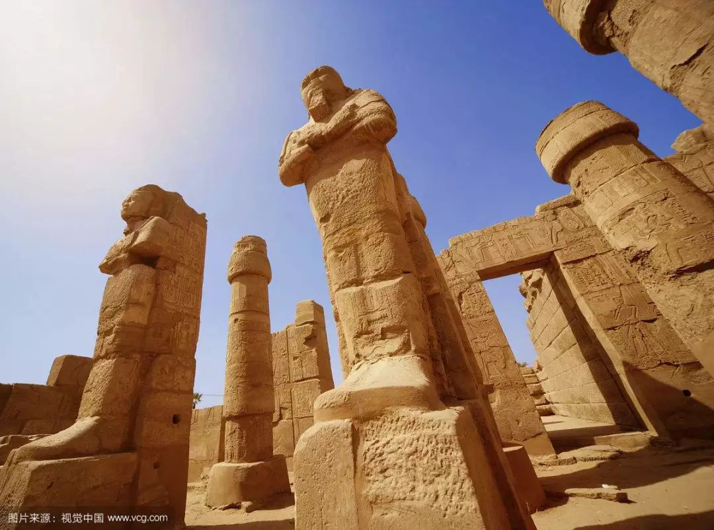

收录于合集
简
刘锦前
上海社会科学研究院国际关系所
【 摘要 】作为一种特殊的社会组织形态，部落制在维护中东地区的传统社会稳定与促进经济、文化等革新发展方面发挥过积极作用。与此同时，部落文化因素也长期左右中东地区国家政局的走向，掣肘着地区的稳定与发展。分析研判中东政局未来趋势，不能不考虑其中的部落文化因素。本文在对中东部落现状进行考察和概览的基础上，结合当前中东地区部落文化的新特点，通过对中东地区部落文化在中东政局演变发展中可能产生的影响进行分析，得出一些探索性思考，以期能从民族文化传承创新视角来把握中东政局未来走向，妥善应对中东政局新发展带来的挑战。
【 关键词 】 ****
中东政局 部落文化 传承创新 想象性接触 前景

中东地区历史发展进程中，以 部落民主制 为核心的治理制度经过几千年发展最终保留下来，演变至今天成为了当前中东地区政治体制中特殊的 部落文化 (TribalCulture)模式。虽然学术界对该政治模式价值地位与未来革新发展方向方面有意见分歧，但基本还是肯定了部落文化在中东地区历史发展中的特殊作用。①为便于深度分析当前中东政局演变发展中的部落文化因素，笔者首先将本文所提及的部落文化进行概念性界定。 **笔者此处涉猎的部落文化有别于文化人类学中的常规理论，即不是以复原中东地区人类群体的文化史与勾画特定性质的社会图景为重心，而是特指当前中东国家社会经济活动以及思想层面和政治领域展现出的这种印有 “部落”痕迹的文化因素及其影响力。**本文中的“部落”是基于对中东特有的伊斯兰文化要素和当前中东国家现代化发展的时代特征的思考而采用的 一个分析概念 ， 用以探讨历史传承下的部落制度对当前民族国家的政治社会运转如何产生影响以及产生多大程度影响这一命题。 本文部落文化研究要回答的核心问题是:如何透过部落制这一中东传承的社会组织模式来研判中东国家未来发展趋势，落脚点在于通过分析得出一些探索性思考，以期能最终有助于我们从民族文化传承创新视角对中东政局未来的走向进行把握，妥善应对中东政局新发展带来的挑战。
一、中东地区部落情况概述
**
**
众所周知，部落作为人类历史发展进程中一种重要的社会组织形态，具有相对独立的政治、社会、经济结构。 根据传统，不同部落之间有一条明确的界线，而对每个部落民来说，部落领土和尊严神圣不可侵犯，假如有人做了有损于本部落声誉的坏事，他所在的部落就会被株连并且因此受到惩罚。①为有助于对中东部落文化进一步剖析，文章先就当前中东部落发展情况②做一概述。
( 一)中东地区主要部落分布
中东地区国家众多，且有些部落因各种原因散处于几个国家，考虑到部落规模和影响力等因素，此处只选择性地将中东部落分布做一宏观面介绍。根据统计，分布在 利比亚 各地的部落大大小小有几百个，中等规模的就有三十多个，但真正有影响力的主要为三大部落:瓦法拉(Warfalla)、图阿雷格(Tuareg)和卡达法(Gaddadfa)。③当前 埃及 主要的大部落有如朱德哈默(Judham)、拉克赫默(Lakhm)、苏拉伊默(Sulaym)等。长期以来，这些部落在国家发展过程中一直扮演着举足轻重的角色，此外在西奈半岛也有数量众多且影响力举足轻重的贝都因人(Bedouins)部落组织。④在 也门 ，全国势力最强、知名度最高的大部落首推哈希德(Hashid)。哈希德部落组织严密，形成了一个政治、经济、军事、宗教四位一体的实体，拥有自己的武装力量，必要时可动员十万人以上的武装力量。⑤ 伊拉克 的大部落主要有巴格达西南的舒马尔(AlShamal)部落，伊拉克北部的阿尔·欧贝迪(AlObeidi)部落，迪瓦拉的阿扎威(Azzawe)部落等。⑥每个部落通常都有上万名成员，舒马尔部落人数甚至多达十万人。⑦而 叙利亚 政府目前所面临的问题及困境亦与部落因素有极大关联。现任总统阿萨德在叙利亚的主要支持者基本上为信奉什叶派的阿拉维(Alawi)部落，而叙利亚高达约74%的民众为逊尼派穆斯林。⑧
( 二)当前中东地区的部落组织结构
可分为三个层次来理解中东地区的部落组织结构。第一个层次是部落联盟 ，主要由一些规模较大的部落和氏族组成，分散生活，组织松散。并且，由于经常有新成员加入，一些部落联盟经常变动，因此不能视其为严格意义上的军事和政治组织形态。以埃及为例，埃及当前有着形形色色的部落组织。自从迁徙到埃及后有些部落一直保持着相对“原始”的状态，例如定居在西奈半岛的贝都因人部落联盟;但大多数部落联盟几经变迁，已与现代国家治理与社会生活相适应。 第二，部落是仅次于部落联盟的组织，是血缘相同或地域相近的一些氏族形成的社会单位。 造成部落之间分合与力量消长变化的主要原因是内部人口数量的激增和政治经济力量的增强，还有就是一些弱小部落为了拥有足够的防御能力不得不相互联合，通过分化组合形成新的部落。 第三，氏族作为中东部落文化传承下的一个基本组织，在历史发展的进程中不但没有被摧毁，反而与中东伊斯兰文化以及现代生活理念相结合，演变成为了今天中东特有的社会基层组织，它们组织放牧、有自己的水源地并有很强的领土观念。 值得注意的是，在该组织的日常生活运转中，女性的作用极其特殊，肩负生产与教育等各类工作，但很难用男女平等这种现代概念来进行分析，因为有些女性随着年龄增长等因素其影响力举足轻重，但有些则明显处于弱势地位状态。①
( 三)关于中东地区当前部落经济形态
部落领地为部落社会的存在和发展提供了各类资源，如赖以生存的牧场和水源等自然资源以及有可供控制的商贸通道等经济和战略资源。当前中东地区的部落内部除了首领之外，还有大批拥有实权的精英阶层。这些精英经营着政府划拨给他们的土地，承担一些重要职责并经常处理部落以外的事务。② **中东部落经济常态表现为 :传统经济和新型经济活动并存，传统游牧、农业和手工业与现代服务业并行。**例如，创立于1968年的阿布扎比国家银行(NationalBankOfAbuDhabi，简称NBAD)是阿联酋第一大银行，海外分支网络遍及海湾成员国阿曼、科威特和巴林，非洲的埃及和利比亚，欧洲的英国、法国和瑞士，远及美国首都华盛顿，该行面向公司和个人客户提供各类金融产品和服务，而其幕后主人就是以在阿布扎比居住的绝大多数居民为主的雅西(lasi)部落人。
( 四)部落在中东国家发展进程中的特殊地位
目前，包括也门、伊拉克、叙利亚和利比亚等在内，不少国家保留着较为完备的以部落首领为核心层的这类社会组织形态。该组织形态中由部落中德望高的老人组成部落会议来共同商议重大事宜，虽然部落以推选方式选出的领导者仍逃不出家族制轮换的宿命，③并且，在国家政局动荡时部族叛乱往往恶化地区局势，但中东地区这份特殊的历史遗产给其部落成员带来更多“公平竞争”机会，民众依据部落传统来处理丧葬与婚庆等民俗事务，有效地促进了社会稳定与国家发展。 从历史进程角度看，部落力量不仅成为这些国家长期抵御外来侵略和异族统治的重要力量，也在维系社会经济正常运转与安民方面发挥着重要作用。
二、当前部落文化发展的新特点及其对中东政局未来走向的影响
随着当前中东社会的发展进步，在周围客观经济环境变迁的压力和外来政治力量的干预下，中东部落社会结构也一直处于调整变化中。而部落文化这一特殊历史遗产无疑将对中东政局未来发展演变产生复杂影响。正如有学者所指出的那样: “部族的差异广泛存在于穆斯林社会并在部分国家中不断引起冲突与失序” ，①对此不得不引起我们的深度思考。
**
**
( 一)中东地区的部落文化发展的新特点
1 ．部落文化传统文化张力与公民社会现代价值理念之间碰撞，形成了中东地区特有的二元文化结构体系。在国家政治文化层面，部落文化带来的直接影响是地方权力中心多元化与国家观念淡薄，这对由国家维持向心力的中央集权政治模式提出挑战。以卡扎菲执政时期的利比亚为例，表面上是卡扎菲通过强权对国家进行掌控并牢牢控制住意识形态，实际上部落地区权力仍控制在地方酋长等首领手中。部落传统中承认部落领袖的至高无上地位以及对国家的资源拥有支配权，在同国家组织的结合中，实现了部落等级和政治等级的统一，在某种程度上也维护了部落内部的稳定和团结。②而广大中东地区国家，包括土耳其、埃及、阿尔及利亚、叙利亚、伊拉克等，基本上在部落居住地传承了部落文化民主模式，但在涉及国家现代政治与自由、平等等思想认同方面存在偏差。 而从某种程度上讲，部落文化在当前中东地区国家现代化进程中起着双刃剑作用。 如经济发展过程中部落文化价值观衍生的狭隘民族主义严重影响了现代经济制度的建设，国家资源配置过多考虑部落因素带来了严重的资源浪费;另一方面，国家的现代化又需要通过传承创新部落文化来实现。 当前中东地区国家面临的问题是如何在衔接传统与现代这二元结构过程中妥善解决部落文化影响力问题，而处理得好坏与否将直接影响国家的未来发展。 自20世纪70年代以来，由于中东地区各国无法平衡现代化过程中包括部落文化在内的传统习俗等问题，伊斯兰复兴运动得益于民族主义失败的“负面合法性”而盎然兴起。在伊朗，现代化改革的失败则直接导致了巴列维世俗政权的垮台。③
2 ．强化部落忠诚与削弱部落硬实力之间难取平衡，部族利益与国家利益博弈引发社会矛盾。部落忠诚在特定社会形态和结构绵延数千年的中东地区历史长河中扮演着极其重要的角色，甚至是维系民族身份与价值观认同的核心价值之一。如中东地区的贝都因人、库尔德人等繁衍发展无不与部落忠诚的价值理念联系在一起。而近代以来，中东国家为树立现代国家权威而在改革与革命过程中多致力于削弱部落硬实力。实际上，上个世纪中后期以来，埃及、叙利亚、伊拉克等国家曾强调过阿拉伯民族主义并有意淡化部落从属关系。如埃及当局通过加强军方力量部署迫使西奈半岛地区部落不得为基地组织提供庇护。④在伊拉克，萨达姆执政时期经常花费巨资来笼络地方部落酋长。而卡扎菲政权曾引进“荣誉证明”措施，旨在强调(部落)地区领导人的责任、义务与处罚并重。⑤特别是叙利亚经过这些年的世俗化进程，虽然部落观念已经逐渐淡化，但派系矛盾衍生、演变成为固态化阶层矛盾，从而恶化了社会矛盾，直至引发目前的政府认同危机。而以索马里为例，虽然诱发国家分裂的原因包括经济利益分配不均等多重因素，但很多学者都认为族群理念分歧与弱中央强地方的现实困境是导致索马里冲突久拖不决的内因。
**3 ．部落认同观念难以上升为“部落间共识”理念，部分部落地区意识形态塔利班化有加速趋势。**在中东地区，“部落间共识”理念发挥着极其重要的作用，在很多国家政治生活中的作用不容小觑。 作为一种特殊的政治治理模式，中东地区部落文化往往和国家权力相结合，通过在部落之间达成共识的方式来促进社会和谐。 对于此处“部落间共识”，笔者侧重强调的是从广义角度看作为部分政治、文化和心理的一种理念认知，该理念通常在社会活动中加以构建，并随着社会制度和利益的改变而得到重塑。由于社会生活的极端复杂性，有学者认为多种认同集于一身是可能的，①但现实政治生活中个人意志必须服从部落整体利益。需要特别指出的是，由于部落影响力大多聚焦于国家边缘地带，容易引起政府的猜疑和担心。②由此，现实的残酷也在于政府会采取打压与拉拢两种手段，这往往又会导致国内部落居民更趋向于部落认同，而对“部落间共识”理念心存疑虑(如:卡扎菲执政时期，由于政府对东部地区部落的压制，心怀不满的东部部落民众成为倒卡急先锋，倒卡行动也就不难理解了)。
此外，在当前中东政局变化发展新阶段，阿拉伯民族主义已经退化为一种用以掩盖社会问题和现存政权的缺陷的合法性工具。 ③而“塔利班化”是一个在“9·11”事件前产生的名词，最早于1999年11月6日的《波士顿环球报》出现，泛指宗教团体模仿塔利班推行严厉的宗教政策。④当前中东部落地区意识形态“塔利班化”是特指信奉伊斯兰等宗教的部落在思想上呈现出的一种暴力倾向与极端化宗教信仰状态。如埃及的穆兄会等伊斯兰背景的党派在与传统部族力量博弈过程中诱发了部族极端保守思想，位于西奈半岛的传统世俗力量则在这个过程中受到冲击而被基地组织所利用。而当前利比亚、伊拉克等地区局势动荡也与当地一些团体塔利班化、极端暴力思想抬头以及“伊斯兰国”(IslamicStateofIraqandalShams，简称ISIS)等极端组织势力迅速扩张有关。 实际上，近年来随着贫富差距扩大，部落力量此消彼长悬殊加剧。为有效控制经济社会资源，统治阶层往往打着民族主义旗号而忽略了对部落文化这一历史遗产进行传承发展。 传统价值体系、社会制度与行为规范由于执政当局只是着意利用、不加注重，致使以国家民族利益为核心的具有历史进步意义的意识形态逐渐转变为褊狭、落伍的保守政治价值观念。
( 二)对中东政局未来走向的影响
**1 ．部落文化有可能成为强国利用的工具，进一步恶化中东地区的安全局势。国家现代化和社会变迁不可避免地带来部落利益与国家整体利益之间的矛盾，进而影响到国家所在的地区安全。而不同国家特别是地区大国反过来又往往会利用部落文化来做文章，以实现自己的国家利益诉求。**⑤并且，结合实际情况进一步来分析，不同国家领导人能力的差异和国家发展阶段的不平衡性更容易被外部大国利用而使当事国的长远利益受到损害。此外，中东一些小国家为有效控制既得利益，往往也会因采取一些措施来提防其他部族夺权而使政局陷入动荡。如，巴雷政权被推翻后，索马里联合大会党的阿里·迈赫迪·穆罕默德(AliMahdiMohamed)成立新政府。由于联合大会党成立的临时政府完全由哈威伊族(Hawiya)组成引起了其他部族的不满，其他部族又联合起来向首都发兵。索马里冲突造成大量平民伤亡和流离失所，导致严重的人道主义危机。①索马里危机折射的是不同的部族派系有着不同的具体利益并各有追求，致使国家陷入动荡。此外再以土耳其为例，土耳其国家战略价值目标首选是防止北部库尔德地区的独立，阻止库尔德分离主义力量增长;但同时土耳其又是美国在中东的盟国，由此在伊拉克重建的问题上，土耳其极力呼吁促成伊拉克境内各派系的对话与和解，反对伊拉克分裂也就不足为奇了。②实际上无论是沙特还是伊朗和土耳其，在国家利益与构建现代国家价值体系方面与传统部落文化相悖，而由于各国迥异的利益诉求与价值理念最终导致了伊拉克局势的高度复杂和重建进程的缓慢与艰难。③
**2 ．部落文化使西方国家推崇的中东民主化进程前景扑朔迷离，如何维护与平衡部落利益仍是当前中东政局发展绕不开的政治议题。**美国等西方国家在中东地区推行民主化，以实现他们所期望的民主政治模式，但阿拉伯之春这把火并没有烧出预期的期望。实际上，中东国家复杂的部落文化遗产和历史传统是任何地区国家发展都无法抛开的因子。 中东地区国家现代化进程在被打上浓重部落烙印的同时，更多是向执政者提出拷问 :执政者该如何整合与平衡部落利益的现实问题?
再以 索马里 为例，全国分为萨马勒(Samale)和萨布(Sab)两大族系六大部族，这六大部族又分为几十个部族分支。④部族分裂赋予索马里前现代特征，族群分裂成为典型的“补丁国家”。⑤正如人类学家卡尔·萨尔兹曼(KarlSalzman)所言，历史上曾有两种方式统治着中东地区，“部落自治”和“中央集权”。前者是这个地区的特色，也是理解该地区的关键。⑥从 中东政治格局角度 看，各国国情与历史传统不同导致差异巨大，差异化造成了中东各国之间政治进程现代化的不平衡，多类型部落文化模式并存。总体看来，部落印记几乎覆盖了所有海湾国家。 科威特、阿曼、巴林 等海湾国家王室统治者均来自古老而显赫的部落，家族地位赋予他们统治的“合法性”。⑦政治改革一旦触及既得利益集团的利益，就会遭到它们的强烈反对。为了不使统治基础被削弱，即使威权主义政府在内外压力下产生改革意愿也会遭到既得利益集团的强烈抗拒，迫使改革最后无果而终。 沙特 王室近年来围绕改革问题产生的分歧是很好的例子。⑧此外， 也门 的情况也很类似。也门在国内有200多个部落并且都有自己的武装。令也门政府头疼的是，一些部落武装分子和基地组织阿拉伯半岛分支的武装分子相互有来往。近年来，在该国发生了多起外国人被绑架事件。有反恐专家认为，这主要是由于部落与政府间的矛盾所致，其目的是通过绑架外国人，扩大部落的影响力，以对政府施加压力。
**3 ．部族矛盾与教派矛盾交织，增加了对中东历史遗留问题解决的难度。**中东地区有基督教、犹太教和伊斯兰教三大主要宗教，其中基督教与伊斯兰教乃至伊斯兰教内部的什叶派和逊尼派之间都有过多次冲突，而以色列与中东国家关系中宗教矛盾与部落矛盾共振而引发的争端近年来更多有发生。①当前，特别是伊斯兰极端与激进势力上升，打破了传统部族之间脆弱的力量平衡，带来诸多动荡因素。 近来中东地区的暴力活动持续不断，伊斯兰激进力量利用部落对政府的不满，伺机制造混乱和恐慌以向政府施压来获取自身利益。 如，埃及穆兄会的下台就是与其在执政期间输出利益给巴勒斯坦地区的哈马斯组织而引发国民抗议有关。②再如，叙利亚国内政局动荡，美国等西方国家干预以及实施其所谓的“民主化”进程并没有带来理想中的社会进步，反而使叙利亚社会充满了血腥。实际上，无论是叙利亚还是利比亚或中东其他国家都承载着本国的国情、教情和历史包袱，国家政治转型与国家间历史遗留问题解决有自身逻辑次序，并且需要经历长时间段的考验。③
三、部落文化传承创新下的中东政局前景展望
**
**
在文化研究领域，功能主义作为文化理论的一大流派一直起着非常重要的作用。 其代表人物 马林诺夫斯基 认为，在一个社会中，所有文化特质都是为满足人的需要服务的;这就是说，一种文化特质的功能就在于满足该群体成员的基本需要和次生需要。④文章此处中东部落文化传承创新是基于其功能价值对中东发展的特殊意义这一缘由角度进行分析，更多是指人文精神层面的承传，文明创造的继承以及文化语义下的各类活动的开展，其实质当是中东人民对伊斯兰文明的坚守与创新。并且， **从现实情况来看，中东地区的文化遗产 (主要指伊斯兰文化)与世界其他事物(文化、文明)发生相互作用，对中东国家自身属性的定位与未来政局发展设置了文化维度，将产生长远影响。**⑤
(一) 中东地区部落文化传承创新主要路径
中东国家发展显然要走适合中东国情的道路，而传承与发展部落文化从理论上讲亦必须遵循文化发展规律。列宁曾言:“文化任务的完成不可能像政治任务和军事任务那样迅速。应当懂得，现在前进的条件已经和从前不一样了。在危机尖锐化时期，几个星期就可以取得政治上的胜利。在战争中，几个月就可以取得胜利，但是在文化方面，要在这样短的时间内取得胜利是不可能的。”⑥并且文化体现着一个国家和民族的品格，它既凝聚国民人心，又事关民生福祉，一定意义上讲，文化的发展就是国家、民族品格的重塑与再造，是推动经济社会发展的重要力量，也是民族凝聚力和创造力的重要源泉，是综合国力竞争的重要因素。但另一方面，认识和把握规律，也不是一件容易的事情，而违反规律，则会造成严重后果。 这里需要强调的是，中东地区部落文化传承离不开积累与创新两条基本途经。正如有学者所极力主张的，文化领域是最需要积累的领域，也是最需要创新的领域，要鼓励创新、支持创新，中东的部落文化遗产才能实现与时俱进。 ①
(二) 部落文化传承下的中东政局前景展望
考虑到部落文化因素对中东政局未来走向的特殊影响以及中东国家在发展过程中的不平衡性等因素影响，中东政局未来发展有可能呈现以下趋势。 第一，中东大的部落家族在国家政局发展方面将逐渐发挥出更加重要的作用。 这不仅与部落自治传统与集权式政治模式长期共生共存、有效结合、左右中东历史有关;更是因为当前情况下土生土长的部族权威比政府更贴近普通民众，这也造成人们的部族归属感增强。② 第二，中东地区经济发展的不平衡性将进一步加剧，左右中东政局纵深发展。 对于中东地区这类主要以油气资源和农贸等初级品出口为主、经济对外依赖度极高的国家来讲，其国民经济之脆弱性不言而喻。特别是在当前，伊拉克、叙利亚和加沙地带的局势复杂，中东国家对外经贸合作的深度将大打折扣。 第三，中东地区安全局势将更趋复杂化。 目前来看，阿拉伯之春的潜在影响依然存在，而当前随着中东国内政经新发展与外来干预力量之间矛盾的增加，③特别是“伊斯兰国”极端组织在中东地区的影响力逐渐扩大，中东地区短期内安全态势不容乐观。而从长远愿景看，国际社会如何与中东爱好和平的主流力量通力合作，通过与中东国家之间进行良性互动，最终来实现全球化进程中中东国家的稳步发展则值得期待。
注：有删减，完整内容及参考文献可参看原文。
文章来源： 《世界民族》 2014年第6期
编辑：小宜 晞哲